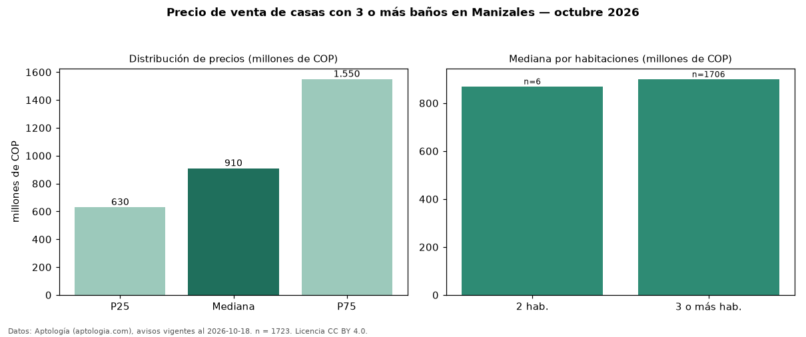

Precio de venta de casas con 3 o más baños en Manizales — octubre 2026
COP 910 millones es el precio mediano de casas con 3 o más baños en venta en Manizales (n = 1.723 avisos). Frente a la mediana de todas las casas en venta de Manizales (COP 770 millones, n = 2.384), queda 18 % por encima; este segmento reúne el 72 % de esos avisos. Por metro cuadrado, la mediana es COP 4,06 millones/m² (n = 1668), 6 % por encima del conjunto de referencia (COP 3,85 millones/m²). El área mediana anunciada es 255 m². La mitad central de los avisos va de COP 630 millones a COP 1,55 mil millones (razón 2,5), una dispersión alta. El segmento con más oferta es el de 3 o más habitaciones (1.706 avisos, mediana COP 900 millones); pasar de 2 habitaciones a 3 o más habitaciones cambia la mediana +3 %. La administración mediana declarada es COP 670.000 al mes (n = 462). El estrato más frecuente es 6 (38 % de los avisos con estrato). Datos: Aptología (aptologia.com), CC BY 4.0 — https://www.aptologia.com/venta/manizales. Archivos: PDF, CSV con las cifras y gráfica PNG.

| Avisos únicos | 1723 |
|---|---|
| Percentil 25 | COP 630.000.000 |
| Mediana | COP 910.000.000 |
| Percentil 75 | COP 1.550.000.000 |
| Mediana por m² | COP 4.062.500 |
Fuente: avisos vigentes de portales inmobiliarios recopilados por Aptología, deduplicados (mínimo 30 avisos únicos por celda). Precios pedidos, no cerrados. Fecha: 2026-10-18.